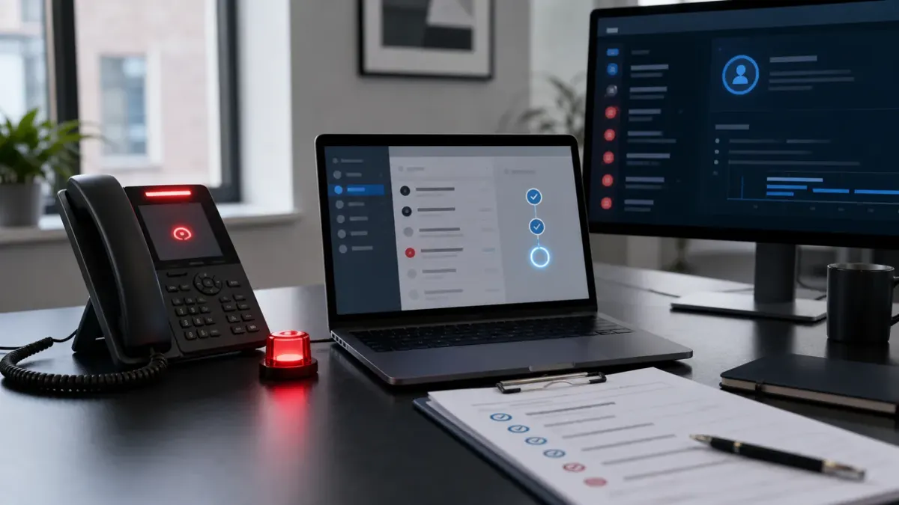

The Attack Might Start with Your Helpdesk

Some cyber attacks do not begin with malware. They begin with a convincing phone call, a rushed support ticket or a request to reset someone's multi-factor authentication.
That is why the recent attention on Scattered Spider-style activity matters to UK SMEs. The group and copycat actors are known for social engineering: persuading support teams, suppliers or staff to help them get access. They do not always need to break through the front door if they can talk someone into opening it.
For a small business, this is a practical warning. The helpdesk, whether internal or provided by an IT supplier, is now part of your security perimeter.
Why Helpdesk Attacks Work
Support teams are trained to help people quickly. Attackers exploit that. They create urgency, claim to be locked out, impersonate senior staff, reference real company details and push for a password reset, MFA reset or device enrolment.
If the support process relies on trust, caller confidence or easily found personal details, it can be beaten. Attackers can collect information from LinkedIn, Companies House, email signatures, breach data, social media and previous phishing attempts. That information can make a fake request sound credible.
The key issue is not whether staff are careless. The issue is whether the process is strong enough when someone is under pressure.
The Reset Process Is the Target
Password and MFA resets are high-value moments. If an attacker can convince someone to reset MFA, register a new device or approve a recovery request, they may bypass controls that the business believes are protecting it.
This matters because many SMEs have improved MFA over the last few years. Attackers have adapted. Instead of only stealing passwords, they target the recovery and support processes around identity.
That means security has to cover the whole lifecycle: enrolment, reset, recovery, offboarding and supplier support.
What Good Looks Like
A secure reset process should be clear, repeatable and hard to rush. It should not depend on whether the person on the phone sounds senior or convincing.
For high-risk requests, require stronger verification. This includes:
- Password resets for directors, finance users and administrators;
- MFA reset or new device enrolment;
- Changes to recovery email addresses or phone numbers;
- Requests to add remote access;
- Requests made through a new phone number, personal email address or unfamiliar channel;
- Requests involving payroll, payments, domains, email rules or backup access.
These requests should trigger a pause, not a shortcut.
Controls SMEs Can Put in Place
1. Use a Call-Back Rule
If someone requests an MFA reset or high-risk account change, call them back using a known number from your records, not the number provided in the request. For senior staff, finance users and administrators, make this mandatory.
2. Separate Request and Approval
For sensitive changes, the person who receives the request should not be the only person who approves it. A second check reduces pressure and catches unusual requests.
3. Record Every Reset
Keep a simple log of password resets, MFA resets, new device enrolments and emergency access changes. Include who requested it, who approved it, what verification was used and when it happened.
4. Lock Down Admin Recovery
Administrator accounts should have the strongest recovery process. Avoid shared admin accounts, personal recovery emails and unmanaged phone numbers. If emergency access accounts exist, protect them carefully and review them regularly.
5. Train Support Teams on Scripts
Do not ask support staff to improvise under pressure. Give them a short script for suspicious reset requests. It should allow them to slow the conversation, refuse unsafe shortcuts and escalate without blame.
6. Watch for After-Hours Pressure
Attackers often use urgency and timing. A Friday evening request from a senior person who is supposedly travelling should receive more scrutiny, not less.
7. Review Supplier Processes
If your IT provider handles resets, ask how they verify users. You need to know whether they use call-backs, approval rules, reset logs and escalation processes. Outsourced support does not remove your responsibility for identity risk.
What to Ask Your IT Provider
- How do you verify a user before resetting MFA?
- Do you call back using known contact details?
- Which account changes require second approval?
- Can we review reset logs for the last 90 days?
- How are administrator and finance-user resets handled differently?
- How would you spot a social engineering attempt against your own team?
- What happens if someone says the request is urgent and comes from a director?
If these questions feel awkward, ask them anyway. A good provider should be able to answer plainly.
Make Reporting Easy
Staff should know that suspicious reset requests, strange calls and unexpected MFA prompts are worth reporting quickly. The reporting route should be simple and should not punish someone for raising a concern.
Early reporting can stop account takeover before it becomes invoice fraud, data theft or ransomware. The worst outcome is not a false alarm. The worst outcome is a real attack that nobody reports because they are embarrassed or unsure.
The bigredbox Take
Identity security is not only an MFA setting. It is also the human process that decides who gets back into an account when something goes wrong.
Scattered Spider-style activity is a reminder that attackers will target support workflows because they are often faster than technical exploitation. For SMEs, the fix is practical: write down reset rules, verify high-risk requests, log changes, train support teams and make your IT provider prove how they handle identity recovery.
If someone can talk their way into a reset, they can talk their way into the business.